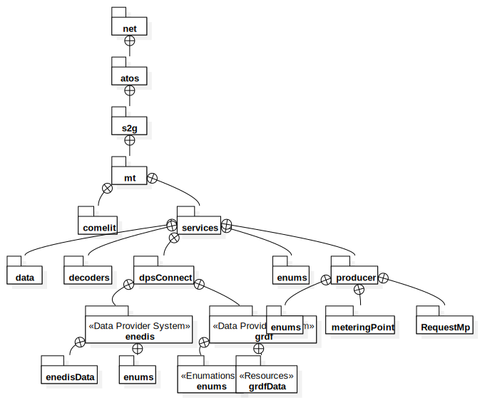

S2G-MT-Services
UMLSubsystem
S2G-MT
::
S2G-MT-Services
Description
none
Diagrams

Package Structure
Type Hierarchy
Properties
Name
Value
name
S2G-MT-Services
stereotype
null
visibility
public
isAbstract
false
isFinalSpecialization
false
isLeaf
false
isIndirectlyInstantiated
true
Dependencies
S2G-MT-Security
MT-outillage
MT-datamodel
Dependants
S2G-MT-Usager-Back
S2G-MT-Pro-Back
S2G-MT-ASGS-Connector
Relationships
(S2G-MT-Services→S2G-MT-Security)
(S2G-MT-Services→MT-outillage)
(S2G-MT-Services→MT-datamodel)
(S2G-MT-Usager-Back→S2G-MT-Services)
(S2G-MT-Pro-Back→S2G-MT-Services)
(S2G-MT-ASGS-Connector→S2G-MT-Services)
Owned Elements
(S2G-MT-Services→S2G-MT-Security)
(S2G-MT-Services→MT-outillage)
(S2G-MT-Services→MT-datamodel)
net
Package Structure
Type Hierarchy